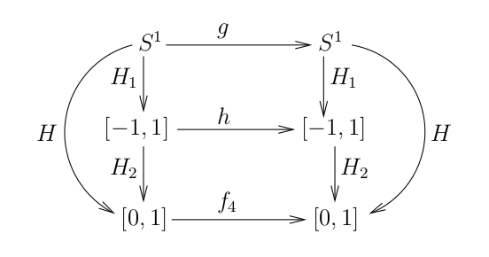

| Document précédent | Document suivant |
Comportement chaotique
Pour motiver la définition de comportement chaotique pour un SDD, nous débutons avec une simple fonction du cercle unité sur lui-même. Après cela, nous considérons le SDD généré par la fonction logistique avec .
Fonctions sur le cercle
Nous considérons le cercle unité dans le plan complexe défini par . La fonction définie par est un isomorphisme entre et . Il est traditionnel de définir la distance entre et dans comme étant , la plus petite distance entre et le long du cercle . Avec cette définition de distance sur , la fonction est une isométrie.
Exemple: à l'aide de l'isomorphisme défini dans le paragraphe précédent, la fonction définie par correspond à la fonction définie par . Tous les points sont des points périodiques de période . Cela démontre que le théorème de Sarkovskii n'est pas valide sur . Ceci est l'exemple qui a été mentionné à la fin du .
À l'aide de l'isomorphisme défini au début de cette section, la fonction définie par correspond à la fonction définie par . Donc, le comportement du SDD généré par la fonction agissant sur
- La fonction a des points périodiques de toutes les périodes, et les points périodiques pour sont dense sur . Pour justifier cet énoncé, considérons . Nous obtenons de que pour . Donc pour . Par exemple, si , nous obtenons pour . Nous obtenons deux orbites périodique de période ; c'est-à-dire, et . Nous avons évidemment le point fixe . Ainsi, puisque est arbitraire, nous avons que a des points périodiques de toutes les périodes De plus, les points périodiques pour sont denses sur car les nombres rationnels sont dense sur .
- Étant donné deux ensembles ouverts , il existe un entier tel que . Ceci est évident car nous pouvons choisir suffisamment grand pour que .
- Il existe tel que, pour tout et voisinage ouvert de , nous avons que pour un point et un entier . Ce résultat est facile à démontrer. Supposons que où est la circonférence du cercle unité. Il existe tel que . Donc, il doit y avoir un point tel que .
Définition: Supposons que est un espace topologique. Une fonction est topologiquement transitive si, pour chaque paire d'ensembles , il existe un entier tel que .
Il découle de (2) ci-dessus que est topologiquement transitive. Grossièrement, cela veut dire que le domaine du SDD généré par ne peut pas être décomposé en deux ensembles ouverts disjoints et invariant sous l'action de .
Définition: Supposons que est un espace topologique. Une fonction a une dépendance sensible aux conditions initiales s'il existe tel que, pour chaque point et voisinage ouvert de , nous avons que pour un point et un entier .
Il découle de (3) ci-dessus que a une dépendance sensible aux conditions initiales. Grossièrement, cela veut dire qu'il y a des points aussi près que nous voulons d'un point initial donné tels que ne reste pas près de pour tout .

Remarque: L'effet papillon est une expression populaire qui fait référence à la dépendance sensible aux conditions initiales. Elle est aussi associée au chaos. L'origine de cette expression remonte au modèle mathématique simplifié pour les prédictions météorologiques proposé par Edward N. Lorenz. Lorenz a observé numériquement qu'une très petite variation des conditions initiales produisait une solution complètement différente. Pour attirer l'attention à ses observations, Lorenz a poser la question suivante qui est maintenant fameuse. Est-ce que le battement d'aile d'un papillon au Brésil provoque une tornade au Texas?. Le modèle de Lorenz est un système d'équations différentielles qui possède ce que l'on appelle un attracteur étrange. L'attracteur étrange pour le modèle de Lorenz est appelé l'attracteur de Lorenz.
Les trois propriétés de mentionnées ci-dessus sont celles qui sont requissent pour dire qu'une fonction a un comportement chaotique.
Définition: Supposons que est un espace métrique. Une fonction a un comportement chaotique ou est chaotique sur si
- a une dépendance sensible aux conditions initiales,
- est topologiquement transitive, et
- l'ensemble des points périodiques pour est dense dans .
Nous avons que définie ci-dessus est chaotique.
Remarque: Supposons que est une fonction continue sur un espace métrique . Il a été démontré par que topologiquement transitive et dense dans impliquent une dépendance sensible aux conditions initiales. Néanmoins, nous préservons la tradition d'utiliser la définition de comportement chaotique donnée ci-dessus car elle énumère les trois propriétés importante du comportement chaotique. De plus, il a été démontré par qu'une dépendance sensible aux conditions initiales et dense dans n'impliquent pas topologiquement transitive, et une dépendance sensible aux conditions initiales et topologiquement transitive n'impliquent pas que est dense dans .
Nous considérons la fonction définie par où . À l'aide de notre isomorphisme entre et , la fonction correspond à la fonction définie par for .
Théorème (Jacobi): Si est un nombre irrationnel, alors toutes les orbites générées par sont dense dans .
Démonstration: Étant donné , nous devons démontrer que est dense dans . ...
Nous démontrons en premier que les points de l'orbite sont distincts. Si , alors . Ainsi, ; c'est-à-dire, . Puisque est irrationnel, nous devons avoir que .
Nous déduisons du paragraphe précédent que est un suite infinie de l'ensemble compacte . Donc, il existe une sous-suite convergente . Soit , il existe un entier positif tels que, si nous choisissons , alors . Puisque préserve la distance sur (c'est seulement une rotation par ), nous obtenons que pour . De même, puisque que préserve la distance sur , nous obtenons que for . Ainsi, si pour . dénotent les arcs fermés de longueur sur qui sont bornés par et , alors un nombre fini de ceux-ci vont éventuellement couvrir . Ainsi, tous les points de sont à une distance inférieure à d'un des points for .
Pour démontrer que est dense dans , il suffit de montrer que, étant donné et , il existe un tel que . Mais cela est une conséquence du résultat démontré au paragraphe précédent car appartient à un des arcs . ∎
Supposons que est une fonction continue sur un espace métrique . Il est facile de démontrer que s'il existe une orbite dense dans de la forme pour une point , alors est topologiquement transitive. Donc, la fonction du théorème de Jacobi est topologiquement transitive. Cependant, n'a pas une dépendance sensible aux conditions initiales car préserve la distance. De plus, comme nous avons montré dans le premier paragraphe de la démonstration du théorème de Jacobi, n'a aucune point périodique.
Nous pourrions en dire beaucoup plus au sujet des fonctions de dans lui-même mais cela nous détournerait du sujet principal de ce document.
Dynamique symbolique
Nous présentons brièvement un des outils qui sera utilisé pour l'étude du comportement qualitatif du SDD généré par la fonction logistique pour .
Définition: L'ensemble est appelé l'espace des suites sur deux symboles.
Proposition: La fonction définie par pour et dans est une métrique sur .
Démonstration: Nous avons que pour tout , et si et seulement si pour tout ; C'est-à-dire, . Nous avons que car pour tout . Finalement, étant donné , nous avons que car pour tout . ∎
Proposition: Soit . Si pour , alors . Si , alors pour .
Démonstration: Si pour , alors . Si pour un , alors
Définition: L'application de décalage (sur deux symboles) est la fonction définie par pour tout .
Proposition: La fonction est continue.
Démonstration: Nous démontrons que est continue en un point arbitraire .
Étant donné , nous choisissons un entier positif tel que et posons . Si est tel que , alors pour selon la proposition précédente. Soit et . Puisque pour , nous obtenons de la proposition précédente que . ∎
Il est généralement facile de démontrer les propriétés associé aux points périodiques pour . Par exemple, l'ensemble des points tels que est de cardinalité . Pour démontrer cet énoncé, il suffit de noter que les points tels que sont de la forme . Il y a différente combinaisons de et de longueur .
Le lecteur peut se douter que le résultat suivant jouera prochainement un rôle majeur dans l'étude du comportement qualitatif du SDD généré par .
Proposition:
- L'ensemble des points périodiques pour est dense dans .
- Il existe tel que l'orbite est dense dans .
- La fonction a une dépendance sensitive aux conditions initiales.
Démonstration:
Étant donné , nous avons que est une suite de points périodiques qui converge vers lorsque car lorsque . Ceci démontre (1). ...
Pour démontrer (2), soit
Étant donné et , nous choisissons un entier positif tel que . Il existe un entier positif tel que la composante de égale la composante de pour . Nous avons alors que .
Pour démontrer que a une dépendance sensible aux conditions initiales, nous choisissons quelconque. Étant donné et un voisinage ouvert de , nous choisissons tel que . Ainsi, il existe un entier tel que . Donc, . ∎
La deuxième propriété de dans la proposition précédente implique que est topologiquement transitive. Nous obtenons donc le résultat suivant.
Corollaire: a un comportement chaotique.
Fonction logistique
Nous poursuivons notre étude du SDD généré par la fonction logistique définie par . Dans cette section, nous assumons que . Il est important de noter que nous n'avons plus quand . Le lecteur peut utiliser l'application graphique pour la fonction logistique qui se trouve dans le pour observer que presque toutes les orbites générées par avec convergent très rapidement vers . Pour obtenir un graphe en forme de toile d'araignée qui soit réaliste, le nombre d'itérations devraient être petit car la convergence vers est très rapide.
Le concept suivant sera utilisé pour l'étude du comportement qualitatif du SDD généré par .
Définition: Supposons que et . sont deux espace métriques, et que et sont des fonctions continues. Nous disons que et sont topologiquement conjuguées s'il existe un homéomorphisme tel que sur . La fonction est appelée une conjugaison topologique entre et .
Les SDD générés par deux fonctions qui sont topologiquement conjuguées possèdent le même comportement qualitatif. En particulier, si un de ceux-ci a un comportement chaotique, alors l'autre a aussi un comportement chaotique. Pour étudier le comportement qualitatif du SDD généré par avec , nous montrons que la fonction définie sur un ensemble invariant particulier de est topologiquement conjuguée à l'application de décalage sur deux symboles définie à la section précédente.
Si , alors comme nous pouvons constater dans la figure suivante.

Soit . Nous avons que est un ensemble ouvert et lorsque pour tout .
Soit et . Puisque la fonction est croissante sur et , il existe un intervalle ouvert tel que De même, puisque la fonction est décroissante sur et , il existe un intervalle ouvert tel que . L'union de et est l'ensemble .

L'ensemble est l'union de quatre intervalles fermés: , , et comme il est illustré dans la figure ci-dessus. Puisque la fonction est croissante sur et , il existe un intervalle ouvert tel que . Puisque la fonction est croissante sur et , il existe un intervalle ouvert tel que . De même, nous obtenons tel que et tel que . L'union des quatre intervalles avec est l'ensemble .
En procédant de façon inductive, nous obtenons les ensembles ouverts
et les intervalles fermés
où pour tout . Nous démontrons par induction que
Le résultat est trivial pour . Pour , nous avons que
Ainsi, le résultat est vrai pour . Nous assumons que le résultat est vrai pour . Alors
où le deuxième provient de l'hypothèse d'induction. Ceci complète la démonstration par induction.
L'ensemble est l'union de intervalles ouverts disjoints. L'ensemble est l'union de intervalles fermés car est l'union de intervalles ouverts. En fait, .
Nous avons que pour tout et . De plus, alterne entre croissante et décroissante sur les intervalles adjacents de la forme . Ainsi a bosses et donc point fixes.


Soit . Nous avons aussi que où . Puisque est un sous-ensemble fermé de l'ensemble compacte , nous avons que est compacte. Si sont deux éléments distincts, soit le plus petit entier tel que . Ainsi, car , et .
Puisque
nous avons que est invariant sous l'action de ; c'est-à-dire, . Puisque lorsque pour , nous avons que est le plus grand ensemble invariant sous l'action de .
Notre but est de démontrer que satisfait la définition ci-dessous et est chaotique.
Définition: Un sous-ensemble de est un ensemble de Cantor si est fermé, est totalement déconnecté (i.e. ne contient pas d'intervalles ouverts), et est parfait (i.e. chaque point de est la limite d'autres points de ).
L'exemple le plus connu d'ensemble de Cantor est l'ensemble triadique de Cantor défini par .
Nous suivons essentiellement la présentation qui a été adoptée dans l'article de . Nous débutons avec une définition et quelques résultats préliminaires.
Définition: Soit une fonction continûment différentiable. Un ensemble est hyperbolique par rapport à s'il existe et tels que pour tout et .
Lemme Ⅰ: Soit une fonction continûment différentiable, et un ensemble compact invariant sous l'action de . Si pour tout , alors est hyperbolique par rapport à si et seulement si, pour chaque , il existe tel que .
Démonstration: La partie seulement si
de
la démonstration est évidente. Il suffit de choisir
assez grand dans la définition d'ensembles hyperboliques par rapport à
.
...
La partie si
de la démonstration est plus
exigeante. Elle est basée sur la relation
pour
.
Si
,
alors
satisfait la définition d'ensembles hyperboliques par rapport à
avec
et
.
Nous pouvons donc assumer que
.
Nous notons que
car
est continûment différentiable sur l'ensemble compact
et
pour tout
.
Pour chaque
,
nous choisissons
et posons
.
La collection
est un recouvrement d'ouverts de l'ensemble compact
.
Donc il existe une sous-recouvrement fini
.
Soit
et
pour
.
Alors
pour
.
Soit , et . Nous avons par construction que and . Le reste de la démonstration est pour montrer que pour tout and . Ceci est démontré par judicieusement diviser le produit dans l'expression pour ci-dessus. Soit et .
- Posons et choisissons tel que .
- Posons et choisissons tel que .
- Posons et choisissons tel que .
- ⋮
- Posons et choisissons tel que .
- ⋮
Finalement, nous choisissons le plus grand entier tel que et posons avec la convention que pour . Nous avons que et . Puisque et nous obtenons que . Ainsi,
avec la convention que pour . ∎
Lemme Ⅱ: L'ensemble est un ensemble hyperbolique par rapport à pour .
Démonstration: Selon le , il suffit de démontrer que, pour chaque , il existe tel que . Nous notons que pour tout car . ...
Nous obtenons de que . Nous obtenons de que . Nous avons que pour . Il y a deux cas à considérer. Si , alors pour tout . Donc, nous pouvons choisir pour tout au pour conclure que est un ensemble hyperbolique par rapport à .

Le cas demande plus de travail. Si , alors . Donc, nous pouvons choisir au pour ce point .
Nous assumons à partir de maintenant que . Nous avons que . Donc, nous devons trouver qui satisfait la condition au . Comme pour la démonstration du , la formule est au coeur de la démonstration présente. Le reste de la démonstration est technique mais élémentaire.
- Il découle de que . Si nous substituons cette formule dans , nous obtenons que .
- Puisque
et
,
nous obtenons de (1) que
- Soit . Nous avons vu en (2) que . Ainsi, puisque est une suite croissante qui converge vers lorsque , il existe un seul entier tel que pour et .
- Il découle de (3) que et ainsi . Donc .
- Puisque
et
,
nous obtenons de (1) que
Donc .
- Nous démontrons par induction que
pour
où
est défini en (3). Il découle de (2) que le résultat est vrai pour
.
Nous assumons que
est vrai pour un entier
.
Puisque
pour
,
nous obtenons que
où l'avant dernière inégalité provient de l'hypothèse d'induction et la dernière inégalité provient de (3). Nous notons que, selon le théorème des valeurs moyennes, il existe tel que pour tout . Ceci justifie la première inégalité ci-dessus.
- Si
,
alors il découle de (4) et (5) que
Donc au est satisfait avec .
- Si , soit la solution de avec . Cette solution est . Nous avons que car donne qui contredit la propriété de minimum dans le choix de . Donc, il découle de (6) que pour . Puisque la fonction est décroissante sur , nous obtenons que pour . Finalement, en combinant ces inégalités avec la relation obtenue en (7), nous obtenons que . Donc, au est satisfait avec .
Ceci conclus la démonstration. ∎
Théorème: Pour , l'ensemble est un ensemble de Cantor et la fonction est chaotique.
Démonstration:
Partie A: Nous démontrons que
est chaotique.
...
Nous démontrons en premier que contient un seul point pour chaque . il suffit de démontrer que n'est pas un intervalle fermé de longueur plus grande que . Il découle du qu'il existe et tels que pour tout et . Étant donné , supposons que avec . Par le théorème des valeurs moyennes, il existe tel que
pour tout . Il en découle que lorsque . C'est une contradiction que est invariant sous l'action de et que est borné.
Il découle du paragraphe précédent que la fonction définie par où est bien définie. C'est aussi une bijection entre et . Pour démontrer que est une fonction continue, nous démontrons que est continue en un point arbitraire . Supposons que . Étant donné , nous choisissons tel que , et tel que . Ainsi, si , alors avec pour . Donc, . Pour démontrer que est une fonction continue, nous prouvons que est continue en un point arbitraire . Supposons que . Donc . Étant donné , nous choisissons tel que . Cela est possible car avec . Soit . Si et , alors pour . Donc, et ainsi .
Nous démontrons maintenant que sur . Nous considérons un point arbitraire et assumons que . Puisque , nous obtenons que
pour un point , où la deuxième inclusion provient de comme nous avons observé précédemment. Donc .
Puisque la fonction est topologiquement conjuguée à , une fonction avec un comportement chaotique sur , nous avons que a un comportement chaotique sur .
Partie B: Nous démontrons que est un ensemble de Cantor.Nous avons que est compact et donc fermé. Le premier paragraphe de cette démonstration peut être facilement adapté pour démontrer que est aussi totalement déconnecté. Il découle aussi de la conjugaison topologique entre et qu'il existe tel que est une orbite dense dans . Cela implique que est parfait. Cela complète la démonstration que est un ensemble de Cantor. ∎
Le SDD généré par la fonction logistique pour exhibe aussi un comportement chaotique. Plus précisément, nous avons le résultat suivant.
Théorème: Pour , le SDD généré par est chaotique.
L'ensemble invariant sur lequel est chaotique n'est pas un ensemble de Cantor. La technique utilisée pour l'étude du comportement qualitatif du SDD généré par pour ne peut pas être utilisé pour l'étude du comportement qualitatif du SDD généré par .
Démonstration: Nous démontrons en premier que la fonction est semi-conjuguée à la fonction définie à la section ci-dessus. C'est-à-dire, nous définissons une fonction telle que mais n'est pas un isomorphisme. ...
Soit la fonction définie par , et la fonction définie par . Si est la fonction définie par , alors
et
Ainsi, si , alors
Le diagramme commutatif ci-dessous résume la discussion au paragraphe précédent.

Nous notons que est une fonction deux pour un car . Nous avons cependant que la fonction est surjective. Puisque ne définit par une conjugaison topologique entre et , Nous ne pouvons pas conclure automatiquement que est chaotique sur car est chaotique sur .
Pour démontrer que la fonction est topologiquement transitive, soit deux ensembles ouverts dans . Nous choisissons deux ensembles ouverts (deux arcs ouverts) sur tel que et . ⊂ V. Puisque est topologiquement transitive, il existe un entier tel que . Ainsi,
Pour démontrer que la fonction a une dépendance sensible aux conditions initiales, nous choisissons . Supposons que et que est un intervalle ouvert qui contient . Notons que la topologie sur est la topologie héritée de . Nous choisissons un arc ouvert sur tel que . Il existe tel que . Ainsi,
Donc, il existe tel que .
Finalement, pour démontrer que l'ensemble des points périodiques pour est dense dans , soit un point arbitraire de , et un intervalle ouvert qui contient . Nous choisissons un arc ouvert sur tel que . Puisque l'ensemble des points périodiques pour est dense sur , il existe . Ainsi, . ∎
Références
Le contenu de ce document est principalement basé sur les livres et articles suivants.
- D. Assaf, IV, and S. Gadbois, Definitions of Chaos, The American Mathematical Monthly, 99, No. 9 (1992), 865.
- B. Aulbach and B. Kieninger, An Elementary Proof for Hyperbolicity and Chaos of the Logistics Maps, Journal of Difference Equations and Applications, Vol. 10, No. 13-15 (2004), 1243-1250.
- J. Banks, J. Brooks, G. Cairns, G. Davis and P. Stacey, On Devaney’s Definition of Chaos, The American Mathematical Monthly, 99, No. 4 (1992), 332-334.
- R. I. Devaney, An Introduction to Chaotic Dynamical Ssystems, The Benjamin/Cummings Publishing Co., Inc. (1986).
- X.-C. Huang, From Intermediate Value Theorem to Chaos, Mathematics Magazine, Vol. 65, No. 2 (1992), 91-103.
- H.-O. Peitgen, H. jürgens and D. Saupe, Chaos and Fractals: New Frontiers of Science, Springer-Verlag (1992).
| Document précédent | Document suivant |